← Index · ← Previous · Next →
Authors: Vitaliy I. Vasyuchka, Florin Ciubotaru, Andrii V. Chumak, Burkard Hillebrands, Alexander A. Serga
Type: both · Category: other · PDF: https://arxiv.org/pdf/2605.07875v1
Analysis basis: abstract only; PDF text extraction failed or PDF unavailable
Topic relevance: spintronics-quantum-optics interface 2/5
Summary. The paper demonstrates that in thick magnetic films, the intrinsic backscattering immunity of chiral surface waves is lost because the waves excite localized bulk modes upon reflection. This discovery provides a framework for understanding wave transport and energy dissipation in nonreciprocal magnetic media.
Why it may be interesting. not directly relevant
Main problem. Understanding how the chirality of Damon-Eshbach surface spin waves influences reflection and backscattering in thick magnetic media where bulk modes are present.
Main result. The reflection of chiral surface waves in thick films is mediated by the excitation of spatially localized, thickness-quantized bulk modes, which provides a pathway for wave reversal and breaks the expected backscattering immunity.
Method. The study utilizes Brillouin light scattering spectroscopy, infrared thermography, and micromagnetic simulations.
Model / system. Micrometer-thick yttrium iron garnet (YIG) films supporting chiral Damon-Eshbach surface spin waves and thickness-quantized bulk modes.
Key observables. Magnon energy accumulation, dissipation, and standing bulk excitations at the boundary.
Important parameters / regimes. Film thickness (micrometer scale), frequency ranges (overlapping with bulk modes), and wave chirality.
Paper structure. The paper introduces the phenomenon of chiral surface waves, presents experimental and simulation evidence of bulk-mode-mediated reflection, and concludes by defining the limits of chirality-based backscattering immunity.
Surface spin waves of the Damon-Eshbach type exhibit intrinsically nonreciprocal transport properties with a chiral dynamical field structure that localizes counterpropagating waves at opposite film surfaces. Such chirality has been predicted to suppress direct backscattering in thin films within frequency ranges free of bulk modes. However, how chirality influences reflection in thicker three-dimensional magnetic media, where a dense spectrum of bulk excitations overlaps with surface waves, remains unclear. Here we demonstrate that, in micrometer-thick yttrium iron garnet films, reflection of the chiral Damon-Eshbach wave from the boundary of the magnetic medium is accompanied by excitation of spatially localized thickness-quantized bulk modes, whereas reciprocal backward-volume waves reflect nearly elastically. Brillouin light scattering spectroscopy, infrared thermography, and micromagnetic simulations reveal standing bulk excitations at the reflecting boundary and quantify the associated magnon energy accumulation and dissipation. These results identify bulk-mode excitations as the physical pathway enabling reversal of chirally localized surface waves in thick films, thereby defining the limits of chirality-based backscattering immunity and providing a general framework for wave transport in nonreciprocal magnetic media.
Authors: Can Yesilyurt
Type: theory · Category: other · PDF: https://arxiv.org/pdf/2605.07189v1
Analysis basis: full PDF text, analyzed in chunks
Topic relevance: non-equilibrium dynamics 2/5
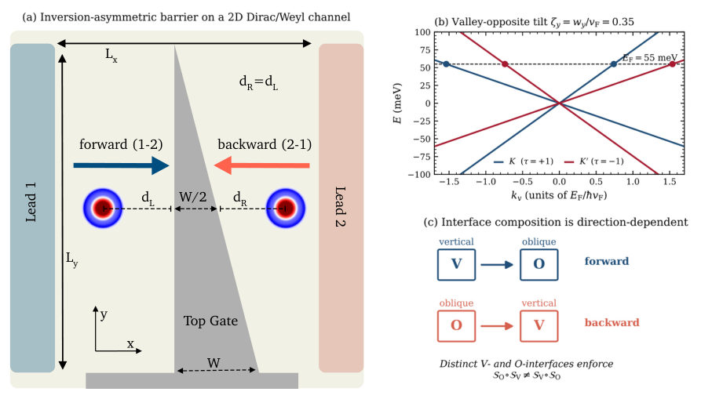
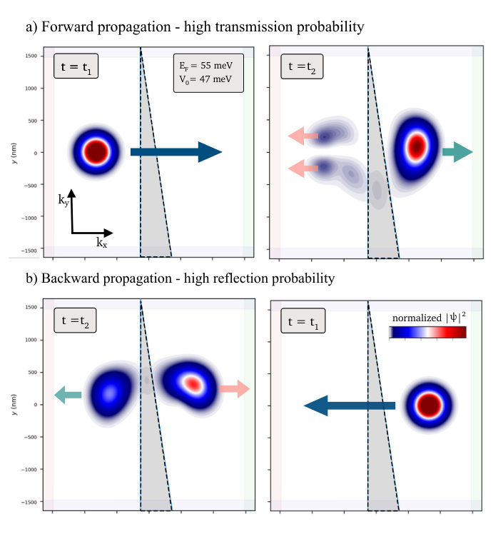
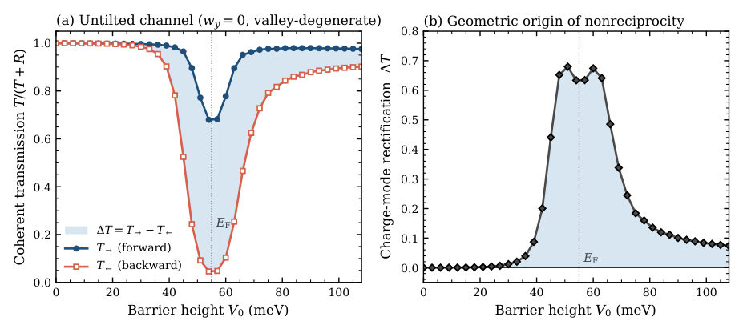
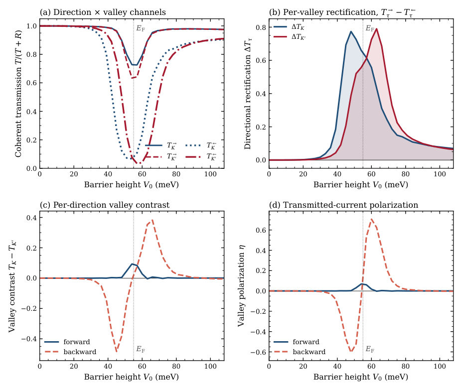
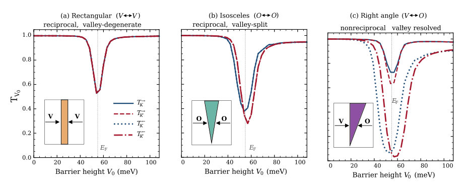
Summary. This paper shows that nonreciprocal transport in Dirac and Weyl semimetals can be achieved purely through the geometry of electrostatic barriers rather than external magnetic fields. By using an asymmetric sequence of interfaces, one can create a device that acts as both a charge rectifier and a valley-polarized diode. This provides a gate-tunable, all-electrical method for controlling valley currents.
Why it may be interesting. not directly relevant
Main problem. Investigating how to achieve nonreciprocal electronic transport and valley-resolved transport in Dirac/Weyl semimetals without relying on magnetic fields, magnetic order, or broken time-reversal symmetry.
Main result. The study demonstrates that a purely geometric mechanism—using an inversion-asymmetric electrostatic barrier (a right-angle wedge) that sequences distinct interface types—can drive charge-mode rectification and, when combined with Dirac-cone tilt, create a valley-resolved diode.
Method. The authors use a second-order split-operator Fourier propagation (Strang split-operator algorithm) to simulate the time-dependent dynamics of 2D Dirac wave-packets.
Model / system. A 2D tilted Dirac/Weyl semimetal channel with mass-confinement walls and absorbing leads, featuring a gate-defined electrostatic barrier with varying geometries (rectangular, isosceles, and right-angle).
Key observables. Cumulative transmission (T) and reflection (R), charge-mode rectification (difference in forward/backward transmission), valley polarization (eta), and valley-resolved transmission.
Important parameters / regimes. Barrier height (V0), Fermi energy (EF), Dirac-cone tilt parameter (zeta), interface angle (alpha), and wave-packet collimation (sigma).
Assumptions / limitations. The model assumes valley-diagonal potentials (neglecting intervalley scattering) and preserves time-reversal symmetry between the K and K' valleys.
Figures summary. Figure 2 shows wave-packet probability density snapshots for forward vs. backward propagation; Figure 3 shows transmission and rectification plots for an untilted channel; Supplementary figures show the effect of barrier geometry and wave-packet collimation on the rectification ratio.
Paper structure. The paper introduces the problem of nonreciprocity, defines the Hamiltonian and geometric models, presents numerical simulation methods, analyzes the geometric origin of rectification in untilted systems, extends the findings to valley-resolved transport in tilted systems, and concludes with a symmetry-based decomposition of the mechanism.
Nonreciprocal electronic transport, defined as a directional asymmetry between the forward and backward two-terminal responses, typically requires a built-in inversion-breaking feature of the host material or an applied field, such as magnetic order, magnetochiral coupling, polar lattice distortion, or a superconducting state. Here, we show that a single electrostatic barrier whose shape lacks inversion symmetry can drive coherent nonreciprocal transport in a Dirac or Weyl channel without any of these ingredients. The mechanism is geometric: across a barrier with two qualitatively distinct refraction interfaces (one vertical and one oblique), forward- and backward-propagating wave packets experience different Fermi-surface-mismatch sequences at the entrance and exit faces. Using coherent split-operator Dirac wave-packet simulations with realistic device parameters, we show that in a channel with isotropic (untilted) energy dispersion, an inversion-asymmetric (right-angle) triangular barrier produces strong charge-mode rectification, establishing its purely geometric origin. Adding a Dirac-cone tilt turns the same shape into a coherent valley-resolved diode whose dichroic structure flips sign across the Dirac point. Strikingly, a mirror-symmetric (isosceles) triangle with two oblique faces exhibits valley-polarized transmission while remaining exactly reciprocal. Oblique interfaces and tilt together do not suffice; the essential ingredient is a sequence of geometrically distinct interface types.
Authors: Konrad Wilke, Mike Pols, Titus S. van Erp, Geert Brocks, Shuxia Tao
Type: theory · Category: other · PDF: https://arxiv.org/pdf/2605.08055v1
Analysis basis: abstract only; PDF text extraction failed or PDF unavailable
Summary. This study uses molecular dynamics to show that arranging halides in layers in CsPbBrxI3-x perovskites creates a highway for defect diffusion along the layers while blocking it across them. This discovery provides a potential mechanism to control defect mobility and improve the stability of perovskite materials for optoelectronic applications.
Why it may be interesting. not directly relevant
Main problem. Investigating how the layered ordering of Br and I anions in mixed-halide CsPbBrxI3-x perovskites affects defect mobility and material stability.
Main result. Layered halide ordering induces strongly anisotropic defect diffusion, where migration is easy along the layers but suppressed across them, driven by lattice strain and octahedral tilting.
Method. Large-scale molecular dynamics simulations using a reactive force field.
Model / system. Mixed-halide perovskites, specifically the CsPbBrxI3-x system, focusing on the arrangement of Br and I anions and the resulting lattice structure.
Key observables. Defect diffusion anisotropy, defect mobility, and lattice strain/octahedral tilting.
Important parameters / regimes. Halide composition (x), Br/I anion ordering, and directional lattice strain.
Assumptions / limitations. The use of a reactive force field in molecular dynamics simulations.
Paper structure. The paper presents a study of defect mobility in mixed-halide perovskites using MD simulations, focusing on the relationship between halide ordering, lattice strain, and anisotropic diffusion.
Mixed-halide perovskites offer a route to enhance phase stability and modify optoelectronic properties. Here, we use large-scale molecular dynamics simulations with a reactive force field to investigate defects in CsPbBr$_\mathrm{x}$I$_\mathrm{3-x}$ perovskites, focusing on how defect mobility can be controlled and the stability of the material may be improved by layered ordering of Br and I anions in layers. Our results show that layered halide ordering induces strongly anisotropic defect diffusion: migration proceeds readily along the layers, whereas diffusion across them is strongly suppressed. For Cs defects, this anisotropy originates from directional lattice strain and the associated octahedral tilting, while halide migration is governed by an interplay between strain and preferential local halide bonding configurations.
Authors: Kakan Deb, Sourav Kanthal, Jyotirmoy Sau, Chandra Shekhar, Manoranjan Kumar, Matthias Gutmann, Jhuma Sannigrahi, Nitesh Kumar
Type: both · Category: strongly correlated electrons · PDF: https://arxiv.org/pdf/2605.07904v1
Analysis basis: abstract only; PDF text extraction failed or PDF unavailable
Summary. This paper explores the magnetic and transport properties of the kagome ferromagnet MgMn6Sn6. It identifies a non-collinear magnetic structure and significant electron correlations, positioning the material as a key platform for studying the effects of correlation on topological transport.
Why it may be interesting. not directly relevant
Main problem. Investigating the interplay between electronic topology, electron correlations, and non-collinear magnetic order in the kagome ferromagnet MgMn6Sn6.
Main result. The study reveals a non-collinear Mn magnetic moment arrangement and a substantial intrinsic Hall conductivity, alongside evidence of enhanced electron correlation via a large Sommerfeld coefficient.
Method. A combination of single-crystal neutron diffraction (SCND), magnetotransport measurements, and first-principles calculations.
Model / system. The system is MgMn6Sn6, a room-temperature kagome ferromagnet characterized by a kagome bilayer with strong in-plane magnetic anisotropy.
Key observables. Hall conductivity (intrinsic and extrinsic components), Mn magnetic moment arrangement, and the Sommerfeld coefficient.
Important parameters / regimes. Room temperature, low temperature regime, and the Hall conductivity value of approximately 0.29 e^2/h per kagome layer.
Paper structure. The paper presents an experimental and theoretical study involving neutron diffraction to determine magnetic structure, followed by magnetotransport analysis and first-principles calculations to interpret electronic properties.
Magnetic kagome metals provide a fertile platform for exploring unusual magnetotransport phenomena arising from the intricate interplay between electronic topology, electron correlations, and magnetic order. MgMn6Sn6 is a room-temperature kagome ferromagnet with strong in-plane magnetic anisotropy. Here, we report a combined study of single-crystal neutron diffraction (SCND) and magnetotransport properties of MgMn6Sn6, supported by first-principles calculations. Our SCND measurements reveal a non-collinear arrangement of Mn magnetic moments within the basal plane of the kagome bilayer. The Hall conductivity shows a substantial intrinsic contribution of approximately 0.29 e^2/h per kagome layer, which is nearly isotropic with respect to the field orientation. At low temperatures, the anomalous Hall conductivity develops a pronounced anisotropic extrinsic component, highlighting the directional sensitivity of scattering processes. The significantly large value of the Sommerfeld coefficient, in the absence of f-electrons, underscores enhanced electron correlation. Therefore, the non-collinear kagome ferromagnet MgMn6Sn6 is a promising candidate for studying the effects of electron correlation on magnetotransport properties.
Authors: Emily Darwin, Riccardo Tomasello, Reshma Peremadathil Pradeep, Mario Carpentieri, Giovanni Finocchio, Hans J. Hug
Type: both · Category: other · PDF: https://arxiv.org/pdf/2605.07643v1
Analysis basis: abstract only; PDF text extraction failed or PDF unavailable
Summary. This paper introduces a new 'bias-engineering' strategy using a synthetic antiferromagnetic system to stabilize tiny skyrmions without an external magnetic field. By achieving sub-20 nm skyrmions at room temperature, this work provides a scalable pathway for developing high-density, energy-efficient spintronic memory and logic devices.
Why it may be interesting. not directly relevant
Main problem. The central challenge is achieving robust stabilization of synthetic antiferromagnetic skyrmions (SAFsk) at zero magnetic field to enable spintronic applications.
Main result. The authors demonstrate a novel SAF bias system that stabilizes both ferromagnetic and synthetic antiferromagnetic skyrmions at zero field, achieving sub-20 nm SAFsk, the smallest reported to date.
Method. The study combines multilayer design and fabrication with a preparatory field cycle, using quantitative magnetic force microscopy (MFM) and micromagnetic modeling for verification.
Model / system. The system consists of ferromagnetic (FM) and synthetic antiferromagnetic (SAF) multilayers integrated with a SAF bias system designed to provide a controlled exchange field.
Key observables. Skyrmion size, skyrmion stability at zero field, and polarity setting.
Important parameters / regimes. Sub-20 nm scale for SAFsk; zero-field regime; room temperature.
Paper structure. Introduction of the SAF bias system concept, description of multilayer design and fabrication, demonstration of zero-field stabilization, and characterization of sub-20 nm SAFsk using MFM and micromagnetic modeling.
Synthetic antiferromagnetic skyrmions (SAFsk) are nanoscale, topologically protected spin textures with strong potential for spintronic technologies because of their high stability and the absence of the skyrmion Hall effect. However, robust zero field stabilization remains a central challenge. Here, a synthetic antiferromagnetic (SAF) bias system is introduced as a novel strategy to stabilize both ferromagnetic skyrmions (FMsk) and SAFsk at zero field. Ferromagnetic (FM) and SAF multilayers are designed, fabricated and integrated with the SAF bias system to enable controlled skyrmion stabilization and polarity setting via multilayer design and a preparatory field cycle. Combining quantitative and high-sensitivity magnetic force microscopy (MFM) with micromagnetic modeling, reliable zero field skyrmion formation is demonstrated and sub 20nm SAFsk are directly observed, the smallest SAFsk reported to date. Moreover, the SAF bias system concept introduced here offers a robust and scalable route to bias future skyrmion multilayers, as its compensated nature suppresses domain formation and preserves a uniform exchange field.
Authors: Ziyi Zhu, Leiming Chen, Xiangqi Liu, Haonan Wang, Chen Xu, Ze Yan, Zhengyang Li, Wei Xia, Jiawei Luo, Na Yu, Xia Wang, Ke Qu, Zhenzhong Yang, Yanfeng Guo
Type: experiment · Category: strongly correlated electrons · PDF: https://arxiv.org/pdf/2605.07336v1
Analysis basis: abstract only; PDF text extraction failed or PDF unavailable
Summary. The paper reports the discovery of a new superconducting polymorph, (BaS)1/3TaS2, which achieves high-temperature 2D Ising superconductivity alongside an exceptionally large interlayer spacing. By using a unique chain-like intercalation, the researchers successfully decoupled the layers without sacrificing Tc, providing a new framework for designing high-Tc 2D materials.
Why it may be interesting. not directly relevant
Main problem. Achieving high superconducting transition temperatures (Tc) in intercalated 2D transition metal dichalcogenities (TMDs) usually requires a trade-off where increased interlayer spacing (and thus 2D character) leads to a decrease in Tc.
Main result. The researchers synthesized a new polymorph, (BaS)1/3TaS2, which uses a unique Ba-S-S-Ba chain intercalation to achieve both a giant interlayer spacing (12.75 A) and an enhanced Tc, effectively breaking the conventional trade-off.
Method. The study employs a unique chain-like intercalation strategy to synthesize the new polymorph and uses comprehensive transport, magnetic, and thermodynamic measurements to characterize its superconducting properties.
Model / system. The system is a new polymorph of the transition metal dichalcogenide TaS2, specifically (BaS)1/3TaS2, featuring a Ba-S-S-Ba chain structure inserted between TaS2 bilayers that breaks bulk c-axis mirror symmetry.
Key observables. Superconducting transition temperature (Tc), interlayer spacing, electronic coupling, and magnetic/thermodynamic properties.
Important parameters / regimes. Interlayer spacing of 12.75 A, superconducting transition temperature (Tc), and Ising spin-orbit fields.
Paper structure. The paper introduces the problem of the Tc-spacing trade-off, describes the synthesis of the new (BaS)1/3TaS2 polymorph, details the structural features (chain intercalation and symmetry breaking), presents transport and thermodynamic evidence for superconductivity, and concludes with the implications for designing 2D Ising superconductors.
Two-dimensional (2D) transition metal dichalcogenides (TMDs) are promising platforms for low dimensional superconductivity. However, in conventional intercalated systems, achieving a high superconducting transition temperature (Tc) often comes at the expense of reduced interlayer spacing and weakened 2D character. Here, we overcome this long-standing compromise through a unique chain-like intercalation strategy. We report the synthesis and properties of a new polymorph, (BaS)1/3TaS2, in which a distinctive Ba-S-S-Ba chain structure is inserted between TaS2 bilayers. This unique configuration breaks the bulk c axis mirror symmetry while achieving exceptional interlayer decoupling, with an inter-bilayer spacing of 12.75 Å-more than three times that of pristine 2H-TaS2. By suppressing interlayer electronic coupling, this structural evolution allows local inversion symmetry breaking within individual TaS2 layers to dominate. This prevents compensation of the Ising spin-orbit fields typical of centrosymmetric bulk phases, enabling robust 2D Ising superconductivity. Remarkably, the compound exhibits an enhanced Tc without sacrificing its large interlayer spacing, thereby breaking the conventional trade-off between large spacing/high anisotropy and high Tc. Comprehensive transport, magnetic, and thermodynamic measurements confirm its robust superconducting state. Our work establishes a versatile intercalation framework for designing bulk-like 2D Ising superconductors, providing a new route to reconcile competing material demands and expanding the scope of Ising superconductivity research.
Authors: Yongzhao Yao, Daiki Katsube, Hirotaka Yamaguchi, Yukari Ishikawa
Type: experiment · Category: other · PDF: https://arxiv.org/pdf/2605.07445v1
Analysis basis: full PDF text, analyzed in chunks
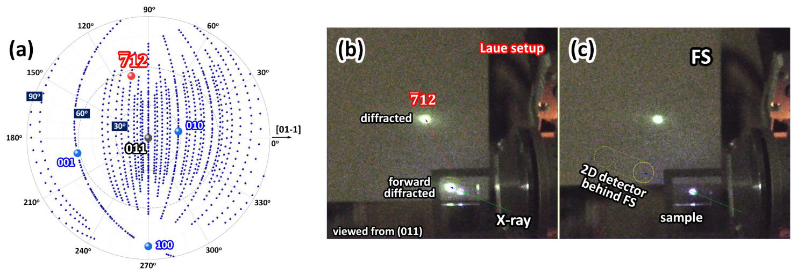
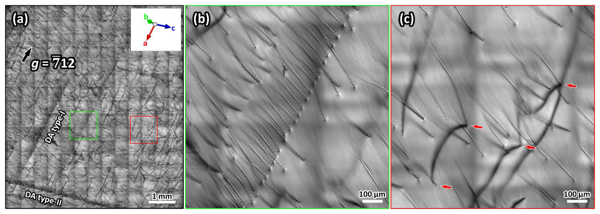
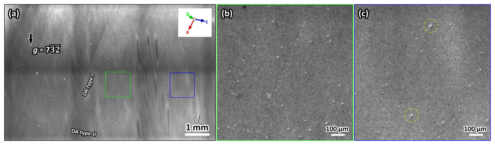
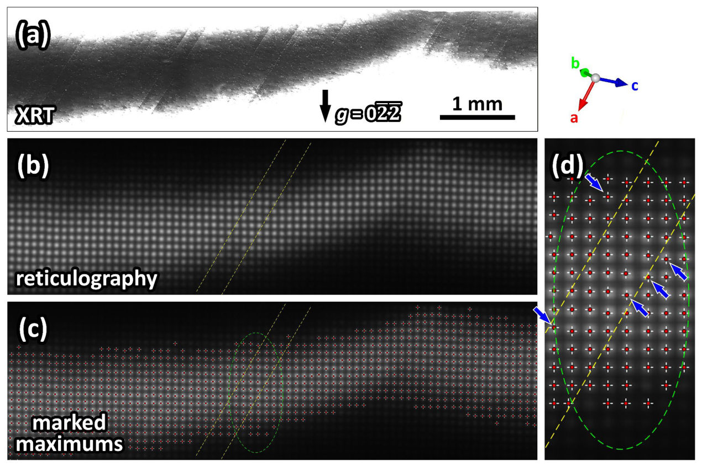
Summary. This paper uses advanced synchrotron X-ray imaging to map the 3D distribution of dislocations in (011)-oriented beta-Ga2O3 substrates. It reveals that dislocations form specific arrays associated with domain boundaries and that the vertical Bridgman growth method produces unique defect structures compared to previous methods. These findings are crucial for improving the quality of epitaxial layers and device performance in ultra-wide bandgap semiconductors.
Why it may be interesting. not directly relevant
Main problem. Characterizing the nature, distribution, and crystallographic orientation of dislocations and domain boundaries in (011)-oriented beta-Ga2O3 substrates grown via the vertical Bridgman method.
Main result. The study identified dislocation arrays (Type-I and Type-II) on the (001) and (011) planes, finding that dislocations on the (011) plane differ from those in EFG-grown substrates and that domain boundaries exhibit misorientations on the order of 1E-5 rad.
Method. Synchrotron-based X-ray techniques including Transmission X-ray Topography (using the Borrmann effect), Reflection X-ray Topography, and X-ray Reticulography.
Model / system. Beta-Ga2O3 (gallium oxide) single-crystal substrates with (011) orientation, grown using the vertical Bridgman method in an N2+O2 ambient.
Key observables. Dislocation line directions, dislocation arrays, domain boundary misorientation, and dislocation contrast features (head-tail contrast).
Important parameters / regimes. Misorientation magnitude of ~10^-5 rad; substrate thickness of ~460 micrometers; bandgap of ~4.5 eV.
Assumptions / limitations. The study notes that it is unclear if observed differences in dislocation behavior are due to the growth method (VB vs. EFG) or other factors.
Figures summary. Fig 1: Pole figures and experimental setup for Borrmann-effect XRT; Fig 2: Transmission XRT images showing dislocation arrays and isolated lines; Fig 3: Reflection XRT images showing dislocation emergence points and contrast; Fig 4: Reticulography images showing domain boundary distortions.
Paper structure. The paper introduces the growth method and sample orientation, describes the synchrotron X-ray experimental setup, presents transmission XRT results for dislocation identification, follows with reflection XRT for surface analysis, and concludes with reticulography for domain boundary quantification.
Dislocation in (011)-oriented $β$-Ga$_2$O$_3$ substrates grown by the vertical Bridgman method was investigated using X-ray topography (XRT), combined with X-ray reticulography. Transmission XRT reveals dislocations lying on the (001) plane and extending along [010], forming arrays associated with domain boundaries. Dislocations on the (011) plane were also identified but differ from those responsible for line-shaped pits on (001) epilayers. Reflection XRT shows good agreement with transmission XRT and enables classification of dislocation types based on contrast features. Reticulography confirms domain boundaries with misorientation on the order of 1E-5 rad, providing insight into defect formation relevant to epi-growth and device performance.
Authors: Giorgia Sementilli, Arslan Masood, Fabio Ronci, Stefano Colonna, Marilena Carbone, Marco Papagno, Ziya S. Aliev, Evgueni V. Chulkov, Sergey V. Eremeev, and Roberto Flammini
Type: experiment · Category: other · PDF: https://arxiv.org/pdf/2605.07700v1
Analysis basis: abstract only; PDF text extraction failed or PDF unavailable
Summary. This paper explores the growth of beta-bismuthene on the topological insulator Sb2Te3 using scanning tunneling microscopy. It details how temperature and coverage influence the formation of the 2D crystal and identifies defects caused by the substrate. This work is significant for developing 2D materials with enhanced spin-orbit interactions for future electronic applications.
Why it may be interesting. not directly relevant
Main problem. The study investigates the epitaxial growth, nucleation processes, and atomic-scale morphology of beta-bismuthene on an Sb2Te3 substrate.
Main result. The researchers characterized the effects of Bi coverage and substrate temperature on the formation of bismuthene islands and identified substrate-induced defects within the lattice.
Method. Scanning tunneling microscopy (STM) was used to systematically investigate the heterointerface and atomic structure.
Model / system. An epitaxial heterointerface consisting of a two-dimensional beta-bismuthene layer grown on a three-dimensional topological insulator, Sb2Te3.
Key observables. Island morphology, nucleation processes, atomic structure, and presence of substrate-induced defects.
Important parameters / regimes. Bi coverage and substrate temperature.
Paper structure. The paper presents the motivation regarding 2D crystals with high spin-orbit interaction, describes the experimental setup of the beta-bismuthene/Sb2Te3 interface, details the investigation of growth parameters via STM, and discusses the resulting structural defects.
Over the past decades, two-dimensional crystals have attracted considerable interest as promising materials for electronic and optoelectronic applications. Among them, graphene analogs composed of heavy atoms occupy a particularly distinctive niche due to their enhanced spin-orbit interaction. Here, we present an epitaxial heterointerface formed by beta-bismuthene on Sb2Te3, a well-known three-dimensional topological insulator. Using scanning tunneling microscopy, we systematically investigated the effects of Bi coverage and substrate temperature on nucleation processes, island morphology, and atomic structure. In addition, substrate-induced defects were identified throughout the bismuthene lattice.
Authors: Holger Röhm, Tobias Leonhard, Michael J. Hoffmann, Alexander Colsmann
Type: experiment · Category: other · PDF: https://arxiv.org/pdf/2605.07780v1
Analysis basis: abstract only; PDF text extraction failed or PDF unavailable
Summary. The study uses advanced microscopy techniques to demonstrate the existence of 90 nm ferroelectric domains in MAPbI3 perovskite thin films. These domains influence local charge carrier extraction, suggesting that ferroelectric properties play a role in the device's electrical performance.
Why it may be interesting. not directly relevant
Main problem. Investigation of the ferroelectric properties and domain structures in methylammonium lead iodide perovskite solar cells.
Main result. Identification of polarized ferroelectric domains with alternating polarization and a width of 90 nm, which correlate with local charge carrier extraction patterns.
Method. Piezoresponse Force Microscopy (PFM), high-resolution photo-conductive atomic force microscopy (pc-AFM), and Kelvin Probe Force Microscopy (KPFM).
Model / system. Methylammonium lead iodide (MAPbI3) perovskite thin-films used in solar cell architectures.
Key observables. Alternating polarization domains, charge carrier extraction patterns, and piezoelectric response.
Important parameters / regimes. Domain width of approximately 90 nm.
Paper structure. The paper presents experimental observations of ferroelectric domains using PFM, followed by correlation with charge carrier extraction under illumination via pc-AFM and surface potential measurements via KPFM.
We explore the ferroic properties of methylammonium lead iodide perovskite solar cells by Piezoresponse Force Microscopy (PFM). In vertical and horizontal PFM imaging, we find domains of alternating polarization with a width of 90 nm which we identify as polarized ferroelectric domains. High-resolution photo-conductive atomic force micrographs under illumination also show alternating charge carrier extraction patterns which we attribute to the local vertical polarization components within the ferroelectric domains. The correlation of the sample properties with Atomic Force and Kelvin Probe Force Micrographs evidence the piezo-electric nature of the domains.
Authors: Quanliang Liu, Jungtaek Kim, Kangwook Lee, Hyunseok Oh
Type: both · Category: disordered systems and neural networks · PDF: https://arxiv.org/pdf/2605.07145v1
Analysis basis: full PDF text, analyzed in chunks
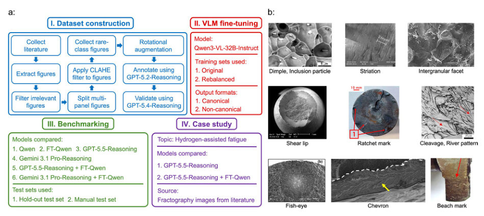
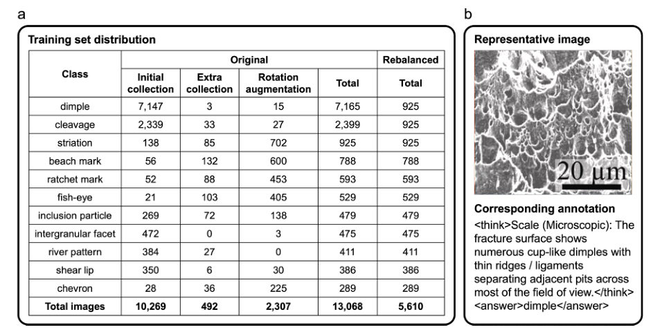
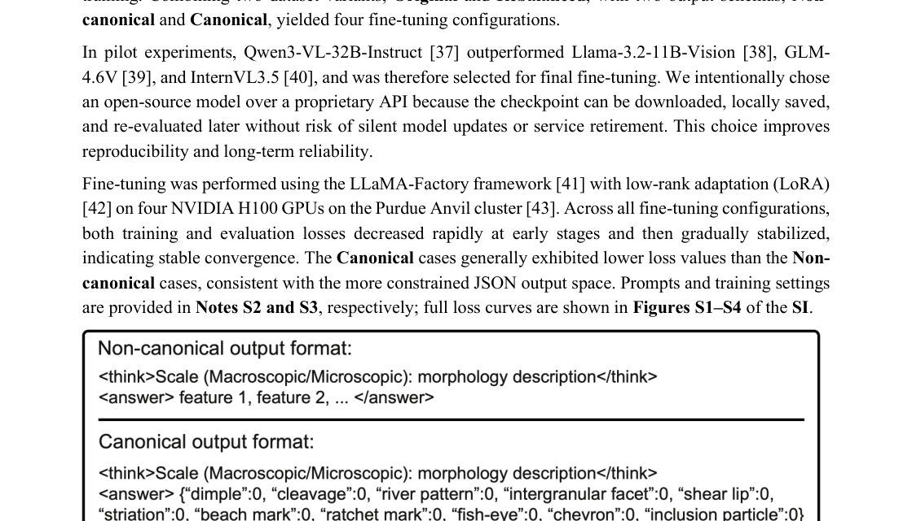
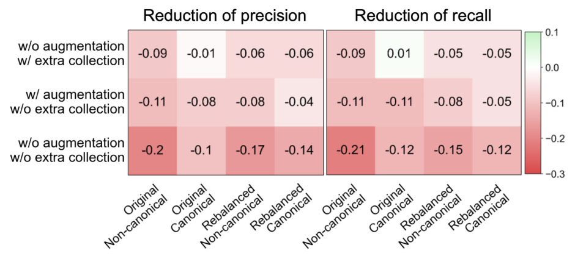
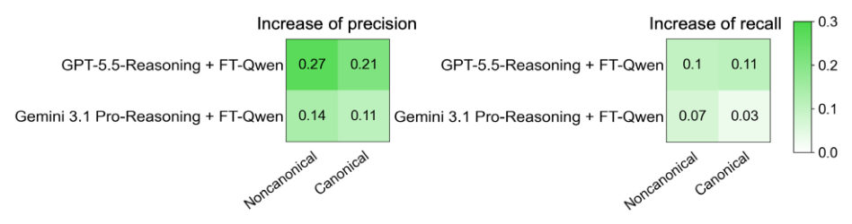
Summary. This paper presents a method for fine-tuning a Vision-Language Model to specifically recognize complex fracture morphologies in metallic materials. By addressing the 'long-tail' problem of rare features through targeted data collection, the researchers created a specialist model that outperforms much larger, general-purpose AI models. This work provides a framework for using small, domain-expert models to enhance the capabilities of large-scale reasoning models in autonomous microscopy workflows.
Why it may be interesting. not directly relevant
Main problem. General-purpose Vision-Language Models (VLMs) lack the domain-specific visual knowledge required to reliably identify subtle and coexisting fracture-surface morphologies in SEM images.
Main result. The fine-tuned specialist model (FT-Qwen) achieved a precision of 0.92, significantly outperforming proprietary models like GPT-5.5 and Gemini 3.1, and can act as a 'copilot' to improve the reasoning of larger models.
Method. The authors fine-tuned Qwen3-VL-32B-Instruct using LoRA on a curated dataset of 13,168 literature-mined images, employing targeted manual collection and rotation-based augmentation to address long-tail feature distribution.
Model / system. The physical system consists of metallic fracture surfaces analyzed via Scanning Electron Microscopy (SEM) images, focusing on 11 morphological features including dimples, cleavage, and striations.
Key observables. Precision, recall, and F1 scores for 11 specific fracture-surface morphological features.
Important parameters / regimes. The 11-feature vocabulary, dataset scales (original vs. rebalanced), and decoding configurations (temperature and top-p).
Assumptions / limitations. The study assumes that visual evidence in the SEM images is sufficient for annotation and focuses specifically on metallic materials, potentially limiting applicability to polymers or ceramics.
Figures summary. Figure 1 shows the workflow and feature examples; Figure 2 shows dataset distribution and augmentation impact; Figure 3 details the VLM output schemas; Figure 4 compares performance across model configurations; Figure 5 shows ablation studies; Figure 6 illustrates performance gains from specialist assistance.
Paper structure. The paper follows a logic of problem identification (domain-specific knowledge gap) -> dataset construction (mining, augmentation, and annotation) -> model fine-tuning (LoRA and output schemas) -> benchmarking (comparison with proprietary models) -> integration (specialist-assisted reasoning) -> error analysis.
Vision-language models (VLMs) have shown strong potential for scientific image understanding, but general-purpose models often lack the domain-specific visual knowledge required for reliable materials characterization. In this work, we fine-tuned an open-source VLM (Qwen3-VL-32B-Instruct) for fracture-surface image analysis using a curated dataset of 13,168 open-source, literature-mined fracture-surface images. Morphology annotations were generated by GPT-5.2-Reasoning (high) from both the images and relevant excerpts of their source papers, and the dataset was further enriched with targeted manual collection and rotation-based augmentation. The resulting specialist model outperforms flagship proprietary multimodal models on a benchmark of 100 manually annotated images. It achieves a precision of 0.92, compared to 0.35 for the base Qwen3-VL-32B-Instruct, 0.58 for GPT-5.5-Reasoning (high), and 0.78 for Gemini 3.1 Pro-Reasoning (high). Dataset ablations show that manual collection of rare-feature images and augmentation via image rotation are both beneficial to improve recognition of less common fracture morphology features. We further discuss integrated use of the fine-tuned model with proprietary models to combine fracture-specific visual accuracy with broader multimodal reasoning for autonomous fractography. Although focused on fracture-surface images, this work demonstrates how VLMs can be adapted through targeted collection and fine-tuning on novel feature images to recognize those features and support downstream decision-making in autonomous microscopy workflows.
Authors: Rofii, Eddwi Hasdeo
Type: theory · Category: other · PDF: https://arxiv.org/pdf/2605.07856v1
Analysis basis: abstract only; PDF text extraction failed or PDF unavailable
Summary. This paper explores how the chirality of Dirac fermions affects the direction and sign of photon-drag currents in 2D systems. It demonstrates that higher chirality indices introduce complex sign reversals in the photocurrent. The findings provide a symmetry-controlled benchmark for understanding non-vertical optical responses in chiral materials.
Why it may be interesting. not directly relevant
Main problem. The study investigates the photon-drag shift current in a 2D massive chiral Dirac model, specifically focusing on the finite-q non-vertical response beyond the small-q perturbative regime.
Main result. The authors find that chirality index J qualitatively reorganizes the sign topology of the photocurrent, where higher chirality (J >= 2) leads to internal zero-current contours and sign reversals.
Method. Direct evaluation of the full finite-q non-vertical response in a single-valley model.
Model / system. An isotropic single-valley two-dimensional massive chiral Dirac model with chirality indices J=1, 2, and 3.
Key observables. Photon-drag shift current (photocurrent) j(q).
Important parameters / regimes. Chirality index J, momentum transfer q, mass gap Delta, and the vertical-transition limit q=0.
Assumptions / limitations. The system is treated within an isotropic single-valley framework; the study focuses on the non-vertical response regime.
Paper structure. The paper presents an investigation of the photon-drag shift current, analyzing the impact of chirality on the sign topology of the photocurrent and the role of symmetry and Pauli blocking.
We investigate the photon-drag shift current in an isotropic single-valley two-dimensional massive chiral Dirac model with chirality index $J=1,2,3$ by directly evaluating the full finite-$q$ non-vertical response beyond the perturbative small-$q$ regime. Our central result is that chirality qualitatively reorganizes the sign topology of the finite-$q$ photocurrent $\mathbf{ j}(\mathbf{ q})$. For $J=1$, the photocurrent remains broadly positive, whereas higher-chirality sectors ($J \ge 2$) generically develop internal zero-current contours and sign reversals within the kinematically allowed region. We further show that the photocurrent is symmetry-constrained to be purely transverse, $\mathbf{j}(\mathbf{q}) \propto \hat{\mathbf{z}}\times\mathbf{q}$, and vanishes in the strictly vertical-transition limit $q=0$ in centrosymmetric systems. Pauli blocking further shapes the response by selecting the active portion of the resonance contour, while its extinction at large $Δ$ or $q$ follows from a simple kinematic cutoff. These results establish the isotropic massive chiral Dirac problem as a symmetry-controlled benchmark for chirality-dependent finite-$q$ shift currents.
Authors: Sreehari M S, Ashutosh Krishna Amaram, Raghavan Ranganathan
Type: theory · Category: disordered systems and neural networks · PDF: https://arxiv.org/pdf/2605.07670v1
Analysis basis: abstract only; PDF text extraction failed or PDF unavailable
Summary. This paper demonstrates that the structural disorder in amorphous carbon can be leveraged to create highly active catalytic sites for hydrogen production. By using machine learning potentials, the authors show that specific local features like 7-membered rings can make amorphous carbon a competitive alternative to noble metal catalysts.
Why it may be interesting. not directly relevant
Main problem. Investigating how structural disorder and defective coordination in Monolayer Amorphous Carbon (MAC) influence its catalytic efficiency for the Hydrogen Evolution Reaction (HER).
Main result. The study finds that MAC possesses a wide distribution of hydrogen adsorption free energies, with approximately 15% of sites exhibiting near-optimal activity (Delta GH < +0.25 eV), driven by features like 7-membered rings and surface curvature.
Method. The researchers used Density Functional Theory (DFT) for initial adsorption energy calculations and fine-tuned a MACE Machine Learning Interatomic Potential (MLIP) foundation model to predict energies across the entire disordered surface.
Model / system. The system is Monolayer Amorphous Carbon (MAC), a disordered 2D material composed of a diverse framework of sp2 and sp3 hybridized carbons with various ring sizes (5, 6, and 7-membered rings).
Key observables. Gibbs free energy of hydrogen adsorption (Delta GH), energy and force fitting errors, and structural features like ring size, curvature, and ripple height.
Important parameters / regimes. Hydrogen adsorption free energy (Delta GH), sp2/sp3 carbon ratio, and local structural descriptors.
Assumptions / limitations. The study assumes that the melt-quench simulations accurately represent the physical reality of amorphous carbon and that the fine-tuned MACE MLIP is a reliable proxy for DFT-level accuracy.
Paper structure. The paper compares crystalline carbon derivatives to amorphous carbon, details the generation of MAC via melt-quench simulations, presents DFT results for local environments, describes the fine-tuning of the MACE MLIP, and concludes with a feature analysis of catalytic activity.
Disorder and defective coordination in the catalytic plane are crucial for enhancing the Hydrogen Evolution Reaction (HER) on two-dimensional catalysts. Amorphous materials are disordered, making them catalytically adaptive for many reactions. In this work, the HER capabilities of Monolayer Amorphous Carbon (MAC) were studied in comparison with crystalline carbon derivatives, such as pristine graphene (GE) and graphyne derivatives. MAC generated from melt-quench simulations revealed a diverse framework of predominantly sp2 and sp3 carbons with numerous 5-, 6-, and 7-membered rings. Density Functional Theory (DFT) calculations investigated free-energy variations in hydrogen adsorption for each material. According to Sabatier's principle, optimum activity is achieved when the Gibbs free energy (Delta GH) change approaches zero. Crystalline carbon materials possess limited active sites, with beta-graphyne showing the best Delta GH value of +0.34 eV. The adsorption study for MAC was conducted in 30 distinct local environments, where core structural properties were analyzed against varying radii. Calculations showed a Delta GH distribution for MAC ranging from -0.02 eV to +1.35 eV. To evaluate activity across the entire MAC surface, a MACE MLIP foundation model was finetuned, achieving optimal energy and force fitting of 1.67 meV/atom and 29.15 meV/A, respectively. The MLIP predicted Delta GH values from -0.91 eV to +1.70 eV, with approximately 15% of sites exhibiting values below +0.25 eV. Feature analysis revealed that 7-membered rings, curvature, and ripple height enhance HER activity. Our findings suggest that, with careful optimization of local features, MAC can be tuned to compete with noble metal catalysts.
Authors: Wei Xiong, Zi-Ming Wang, Xin-Mei Wei, Rui Wang, Dong-Hui Xu
Type: theory · Category: strongly correlated electrons · PDF: https://arxiv.org/pdf/2605.07206v1
Analysis basis: abstract only; PDF text extraction failed or PDF unavailable
Summary. This paper shows that the topological properties of a 2D nonsymmorphic antiferromagnet can be switched between first-order and second-order topology simply by changing the shape of the crystal edge. It identifies a symmetry-based mechanism where magnetic mirror symmetries protect corner states even when edge states are gapped. This provides a way to control topological boundary modes through termination geometry.
Why it may be interesting. not directly relevant
Main problem. The study investigates how the topological boundary manifestations of a 2D nonsymmorphic antiferromagnet can be controlled by the geometry of the system's termination.
Main result. The authors demonstrate a duality where a single bulk phase exhibits first-order topology (gapless edge states) on screw-compatible edges and second-order topology (zero-dimensional corner states) on diamond-shaped terminations.
Method. The study utilizes a generic antiferromagnetic Dirac model featuring a momentum-dependent spin-density-wave (SDW) mass and analyzes the effects of different boundary geometries and lattice perturbations.
Model / system. A two-dimensional nonsymmorphic antiferromagnet described by an antiferromagnetic Dirac model with a symmetry-allowed, momentum-dependent spin-density-wave (SDW) mass.
Key observables. Quantized quadrupole moment, edge state gap, and zero-energy corner states.
Important parameters / regimes. Termination geometry (screw-compatible edges vs. 45-degree diamond-shaped edges) and lattice perturbations.
Assumptions / limitations. The model assumes a generic antiferromagnetic Dirac framework with specific magnetic mirror symmetries and chiral symmetry.
Paper structure. The paper introduces the concept of hybrid-order topology, presents the Dirac model with SDW mass, analyzes edge states for different boundary geometries, demonstrates the emergence of corner states via magnetic mirror symmetries, and discusses the robustness of these states against lattice perturbations.
We theoretically demonstrate hybrid-order topology in a two-dimensional nonsymmorphic antiferromagnet. Utilizing a generic antiferromagnetic Dirac model with a symmetry-allowed, momentum-dependent spin-density-wave (SDW) mass, we show that a single bulk insulating phase exhibits distinct topological boundary manifestations governed solely by the termination geometry. For screw-compatible edges, nonsymmorphic screw symmetry protects gapless first-order edge states. In contrast, for a $45^\circ$ diamond-shaped termination, the screw symmetry is broken at the boundary, resulting in gapped edges. However, the finite geometry still preserves magnetic mirror symmetries $\mathcal{M}_x\mathcal{T}$ and $\mathcal{M}_y\mathcal{T}$, which enforce an alternating pattern of edge masses, thereby binding zero-dimensional corner states. This second-order phase is characterized by a quantized quadrupole moment, with corner states pinned to zero energy by the chiral symmetry. We further demonstrate that explicit lattice perturbations can selectively gap the first-order edge modes while robustly preserving the corner states. Our work establishes a symmetry-based route to a termination-controlled duality between first- and second-order topology in magnetic nonsymmorphic systems.
Authors: Claudia Gollner, Mohammad Taghinejad, Chenyi Xia, Zhepeng Zhang, Fang Liu, Francesco Laudani, Annette Foelske, Mark L. Brongersma, Andrew J. Mannix, Tony F. Heinz, Aaron Lindenberg
Type: experiment · Category: other · PDF: https://arxiv.org/pdf/2605.07921v1
Analysis basis: abstract only; PDF text extraction failed or PDF unavailable
Summary. The study shows that the morphology of the interface between WS2 and gold can be used to control carrier extraction and improve device stability. By promoting ultrafast charge separation, the researchers found they could prevent the material from degrading in air, potentially removing the need for protective encapsulation.
Why it may be interesting. not directly relevant
Main problem. The implementation of 2D TMDCs in optoelectronics is limited by poor electrical contact reliability and photo-induced degradation under ambient conditions.
Main result. Discontinuous WS2 contacts on rough gold interfaces generate larger net photocurrents due to imbalanced carrier transfer, and ultrafast charge extraction can prevent photo-induced degradation without encapsulation.
Method. Time-domain THz emission spectroscopy is used to probe charge carrier dynamics and extract effective transport times for electrons and holes.
Model / system. Monolayer WS2 (a transition metal dichalcogenide) placed on different substrates, specifically gold (Au) and fused silica (SiO2), with varying interface morphologies.
Key observables. Effective transport times for electrons and holes, net photocurrents, and photo-induced degradation rates.
Important parameters / regimes. Interface morphology (rough vs. uniform), laser excitation energy (above band gap), and environmental conditions (ambient).
Paper structure. The paper introduces the problem of stability and contact in 2D materials, describes the THz spectroscopy methodology, presents findings on carrier transport dynamics across different interfaces, demonstrates the suppression of degradation via charge separation, and concludes with implications for device design.
Two-dimensional transition metal dichalcogenides (TMDCs) are promising materials for next-generation optoelectronic devices, yet their implementation is hindered by limited sample stability and challenges in forming reliable electrical contacts. Here, by utilizing time-domain THz emission spectroscopy we directly probe charge carrier dynamics in monolayer WS2 on gold (Au) and fused silica (SiO2) as a function of interface morphology. For laser excitation above the band gap of WS2, we independently extract effective transport times for both electrons and holes and find that discontinuous WS2 contacts on rough Au generate larger net photocurrents than uniform, strongly coupled interfaces - a counterintuitive observation attributed to imbalanced electron and hole transfer from WS2 to Au. Crucially, we demonstrate that ultrafast charge extraction and separation suppress recombination-driven energy release and thereby prevent photo-induced degradation under ambient conditions, eliminating the need for encapsulation. These findings redefine interfacial design as a central control parameter for both performance and stability in 2D optoelectronic devices.
Authors: Boris Slautin, Utkarsh Pratiush, Yu Liu, Kamyar Barakati, Sergei Kalinin
Type: both · Category: disordered systems and neural networks · PDF: https://arxiv.org/pdf/2605.06839v1
Analysis basis: abstract only; PDF text extraction failed or PDF unavailable
Summary. This paper introduces a new way to use AI in microscopy to not just optimize experiments, but to actually discover new physical laws. By combining symbolic regression with the reasoning capabilities of Large Language Models, the system can propose and validate new mathematical models for experimental data, such as domain wall motion in ferroelectrics.
Why it may be interesting. not directly relevant
Main problem. Current autonomous microscopy workflows are limited to optimizing within fixed hypothesis spaces and cannot generate new physical models from experimental data.
Main result. The authors developed an open hypothesis-learning framework that uses LLMs and symbolic regression to discover interpretable physical laws, successfully recovering voltage-time growth laws for ferroelectric domain switching.
Method. The framework combines symbolic regression to generate candidate analytical relationships from sparse measurements with an LLM-based evaluator that ranks candidates based on physical plausibility and consistency with known mechanisms.
Model / system. The experimental platform is autonomous scanning probe microscopy, specifically piezoresponse force microscopy (PFM) applied to ferroelectric domain switching in a PZT thin film.
Key observables. voltage-time growth laws, ferroelectric domain switching dynamics
Assumptions / limitations. The framework assumes that physical laws can be represented by analytical expressions discoverable via symbolic regression and that LLMs can effectively evaluate physical plausibility.
Paper structure. The paper introduces the limitation of closed-loop optimization, presents the new open hypothesis-learning framework (combining symbolic regression and LLM evaluation), demonstrates the implementation on PZT thin films via PFM, and discusses the broader implications for hierarchical autonomous scientific workflows.
Autonomous experimentation has transformed microscopy and materials discovery by enabling closed-loop optimization including imaging and spectroscopy tuning, strucutre property relationship discovery, and exploration of combinatorial libraries. However, most current workflows remain limited to selecting measurements within fixed objective or hypothesis spaces, rather than generating new physical models from experimental data. Here, we introduce an open hypothesis-learning framework that combines symbolic regression with large-language-model-based physical evaluation and implement it for autonomous scanning probe microscopy. Symbolic regression generates candidate analytical relationships directly from sparse measurements, while the language-model evaluator ranks these candidates according to physical plausibility, scaling behavior, and consistency with known mechanisms. We demonstrate the approach on autonomous piezoresponse force microscopy measurements of ferroelectric domain switching in a PZT thin film. Starting from five seed measurements, the workflow evolves from physically incomplete candidate expressions toward interpretable voltage-time growth laws consistent with kinetic domain-wall motion. This work extends autonomous microscopy from closed-loop optimization toward open hypothesis discovery, where candidate physical laws emerge from the experiment itself rather than being specified in advance. More broadly, the framework establishes a route for integrating symbolic regression, physical reasoning, and adaptive experimentation into hierarchical autonomous scientific workflows.
Authors: A. S. Slobodskoi, S. S. Apostoloff, I. S. Burmistrov
Type: theory · Category: quantum information and computing · PDF: https://arxiv.org/pdf/2605.06828v1
Analysis basis: abstract only; PDF text extraction failed or PDF unavailable
Summary. This paper provides a theoretical analysis of Majorana zero modes in a system where a magnetic skyrmion is coupled to a superconducting vortex. It establishes an analytical framework to describe the energy spectrum and wavefunctions of these states, highlighting the necessity of spin-orbit coupling. The findings are significant for the development of platforms suitable for topological braiding operations.
Why it may be interesting. The paper explores the stabilization of Majorana modes via spin-orbit coupling in topological heterostructures, which is fundamental for developing the building blocks of fault-tolerant topological quantum computation.
Main problem. The study aims to analyze the low-energy quasiparticle bound states, specifically Majorana zero modes, in heterostructures composed of chiral ferromagnets and superconductors.
Main result. The authors develop an analytical framework for Majorana wavefunctions and demonstrate that spin-orbit coupling is critical for stabilizing these modes, with analytical results showing excellent agreement with numerical simulations.
Method. The researchers employ a Bogoliubov-de Gennes approach to develop an analytical framework for wavefunctions and spectra, supplemented by numerical simulations.
Model / system. A heterostructure consisting of a chiral ferromagnet hosting a magnetic skyrmion coupled to a superconducting film containing a superconducting vortex.
Key observables. Majorana zero mode wavefunctions, energy spectrum of low-lying quasiparticle states, and the impact of texture perturbations.
Important parameters / regimes. Spin-orbit coupling strength, presence of skyrmion-vortex pairs, and effects of vector potentials and stray magnetic fields.
Assumptions / limitations. The analysis considers realistic effects like texture perturbations and vector potentials, but focuses on the low-energy limit of the Bogoliubov-de Gennes equations.
Paper structure. The paper introduces the system, presents an analytical framework for Majorana and low-lying state wavefunctions using the Bogoliubov-de Gennes approach, compares analytical results to numerical simulations, and evaluates the impact of realistic perturbations.
Majorana zero modes are central to the pursuit of fault-tolerant topological quantum computation. While traditionally sought in one-dimensional hybrid nanowires, a robust alternative platform involves heterostructures combining superconductors with noncollinear magnets. This work focuses on a particularly promising system: a chiral ferromagnet hosting a magnetic skyrmion coupled to a superconducting film containing a superconducting vortex. Such skyrmion-vortex pairs have recently been realized experimentally and are theorized to harbor localized Majorana states, offering a potential pathway for braiding operations. We present a comprehensive theoretical analysis of the low-energy quasiparticle bound states in these heterostructures. Extending previous studies, we develop an analytical framework for the Majorana wavefunctions as well as the wavefunctions and spectrum of other lowlying states within a Bogoliubov-de Gennes approach. Our analytical results explicitly demonstrate the critical role of spin-orbit coupling for the stabilization of Majorana modes and provides approximate analytical expressions for low-lying states localized at the vortex, both with and without an accompanying skyrmion. The derived analytical results show excellent agreement with numerical simulations. We further elucidate the role of realistic effects, including vector potentials and texture perturbations from stray magnetic fields, to assess their impact.
Authors: Han Yang, Xixian Liu, Chenxi Hu, Yichi Zhou, Yu Shi, Chang Liu, Junfu Tan, Jielan Li, Guanzhi Li, Qian Wang, Yu Zhu, Zekun Chen, Shuizhou Chen, Fabian Thiemann, Claudio Zeni, Matthew Horton, Robert Pinsler, Andrew Fowler, Daniel Zügner, Tian Xie, Lixin Sun, Yicheng Chen, Lingyu Kong, Yeqi Bai, Deniz Gunceler, Frank Noé, Hongxia Hao, Ziheng Lu
Type: theory · Category: disordered systems and neural networks · PDF: https://arxiv.org/pdf/2605.07927v1
Analysis basis: abstract only; PDF text extraction failed or PDF unavailable
Summary. This paper introduces MatterSim-MT, a large-scale foundation model for materials science trained on 35 million structures. It moves beyond simple potential energy surfaces to predict complex multi-task properties like dielectric matrices and magnetic moments. This provides a scalable way to perform high-fidelity in silico materials characterization.
Why it may be interesting. not directly relevant
Main problem. The scalability and generalizability of first-principles methods and task-specific machine learning models are limited when characterizing the vast space of material structures and properties.
Main result. The development of MatterSim-MT, a multi-task foundation model capable of predicting complex material properties like LO-TO phonon splitting, electric hysteresis, and redox transitions.
Method. A multi-task foundation model pretrained on 35 million first-principles-labeled structures and fine-tuned on various electronic and structural properties.
Model / system. A multi-task machine learning architecture trained on 89 elements across a wide range of temperatures (up to 5000 K) and pressures (up to 1000 GPa).
Key observables. Bader charges, magnetic moments, Born effective charges, dielectric matrices, LO-TO phonon splitting, and electric hysteresis.
Important parameters / regimes. Temperatures up to 5000 K, pressures up to 1000 GPa, and 89 different elements.
Assumptions / limitations. The model relies on the quality and coverage of the 35 million first-principles-labeled structures used for pretraining.
Paper structure. The paper introduces the MatterSim-MT model, describes its pretraining and fine-tuning process, demonstrates its ability to simulate complex physical phenomena (phonon splitting, hysteresis, redox transitions), and discusses its scalability and extensibility via active learning.
Accurate property characterization is a major bottleneck in materials design. While first-principles methods and task-specific machine-learning models have driven important progress, they remain fundamentally limited in scalability and generalizability across the vast space of structures and properties relevant to real-world materials design. We present MatterSim-MT, a multi-task foundation model for in silico materials simulation and property characterization. The model is pretrained on over 35 million first-principles-labeled structures covering 89 elements, temperatures up to 5000 K and pressures up to 1000 GPa, and is fine-tuned on various properties including Bader charges, magnetic moments, Born effective charges, and dielectric matrices. Out of the box, MatterSim-MT not only serves as a foundation model for predicting material structure, dynamics and thermodynamics, its multi-task architecture also enables a wide range of complex simulations that cannot be captured by potential energy surfaces alone. For example, we demonstrate pressure-dependent LO-TO phonon splitting in SiC with close agreement with experiment, electric hysteresis in ferroelectric BaTiO3, and the cationic-to-anionic redox transition during delithiation of a Li-rich cathode material. Finally, we show that MatterSim-MT scales well with more data and parameters, can be efficiently fine-tuned to higher levels of theory, and can be efficiently extended to new systems via active learning. Overall, we believe this approach provides a scalable route to accurate in silico materials characterization.
Authors: Aaron Gobeyn, Wolfgang Ackermann, Herbert De Gersem
Type: theory · Category: other · PDF: https://arxiv.org/pdf/2605.07958v1
Analysis basis: abstract only; PDF text extraction failed or PDF unavailable
Summary. This paper presents an expanded multilayer model for superconducting radio-frequency applications that handles arbitrary sequences of superconducting, normal, and insulating layers. It provides a method to calculate surface impedance and losses, which is useful for simulating complex coatings. The findings help optimize the thickness and configuration of superconducting coatings to maintain high performance.
Why it may be interesting. not directly relevant
Main problem. The paper aims to generalize the multilayer model for SIS structures to include arbitrary sequences of superconducting, normal, and insulating layers while accounting for ohmic losses and dielectric effects.
Main result. The study finds that the optimal configuration for (SI)nS structures is n=1, and that superconducting coating layers can be thinner than the penetration depth with minimal performance loss. It also demonstrates that thicker transition layers in SS bilayers degrade the maximum applicable field.
Method. The authors extend the Kubo model, utilize the Leontovich boundary condition to calculate surface impedance for finite element integration, and apply the Poynting theorem to determine layer-specific loss contributions.
Model / system. A multilayered structure consisting of arbitrary sequences of superconducting (S), normal conducting (N), and insulating (I) layers, specifically examining (SI)nS and SS bilayer configurations.
Key observables. Maximum applicable field, surface impedance, effective penetration depth, and individual layer loss contributions.
Important parameters / regimes. Layer thickness (relative to penetration depth), number of layers (n), and transition region thickness.
Assumptions / limitations. The model uses the Leontovich boundary condition for surface impedance and assumes transition regions can be represented by virtual layers with interpolated parameters.
Paper structure. The paper introduces a generalized multilayer model, examines the performance of (SI)nS structures, discusses modeling transition regions in SS bilayers via virtual layers, and provides a formulation for surface impedance and loss analysis.
We extend the multilayer model of \etal{Kubo} for superconductor-insulator-superconductor (SIS) structures in two ways: first, by generalizing it to arbitrary sequences of layers of arbitrary type, i.e. superconducting, normal conducting, and insulating; and second, by accounting for all contributions, including ohmic losses and dielectric effects. We examine the maximum applicable field for $(\text{SI})^n\text{S}$ structures. We find that the optimum configuration corresponds to the $n=1$ case. However, the thickness of the superconducting coating layers can be reduced to below their penetration depth with minor performance penalty. We discuss the ability to model transitions in SS bilayers by introducing a set of virtual layers that represent the transition region through interpolated parameters. We find degradation of the maximum applicable field with thicker transition layers, and a larger effective penetration depth of the electromagnetic fields. Furthermore, the surface impedance of the multilayer structure is calculated using the Leontovich boundary condition, yielding a formulation suitable for integration into finite element simulations. Additionally, the Poynting theorem is used to determine the loss contributions of individual layers.
Authors: G. Angloher, S. Banik, A. Bento, A. Bertolini, R. Breier, C. Bucci, J. Burkhart, L. Burmeister, L. Canonica, E. Cipelli, S. Di Lorenzo, J. Dohm, F. Dominsky, A. Erb, E. Fascione, F. v. Feilitzsch, S. Fichtinger, D. Fuchs, V. M. Ghete, P. Gorla, P. V. Guillaumon, S. Gupta, D. Hauff, M. Ješkovský, J. Jochum, M. Kaznacheeva, H. Kluck, H. Kraus, B. von Krosigk, A. Langenkämper, M. Mancuso, B. Mauri, V. Mokina, C. Moore, P. Murali, M. Olmi, T. Ortmann, C. Pagliarone, L. Pattavina, F. Petricca, W. Potzel, P. Povinec, F. Pröbst, F. Pucci, F. Reindl, J. Rothe, K. Schäffner, J. Schieck, S. Schönert, C. Schwertner, M. Stahlberg, L. Stodolsky, C. Strandhagen, R. Strauss, I. Usherov, M. Zanirato, V. Zema
Type: experiment · Category: other · PDF: https://arxiv.org/pdf/2605.07592v1
Analysis basis: abstract only; PDF text extraction failed or PDF unavailable
Summary. This paper details the optimization of Tungsten Transition Edge Sensors for the CRESST dark matter experiment. By tuning the physical properties of phonon collectors, the researchers achieved improved signal-to-noise ratios and lower energy thresholds. This advancement is crucial for detecting low-mass dark matter particles.
Why it may be interesting. not directly relevant
Main problem. Optimizing Tungsten Transition Edge Sensors (W-TES) to improve the signal-to-noise ratio and detector performance for sub-GeV dark matter detection.
Main result. The study identifies optimal thickness, dimensions, and material composition for phonon collectors, leading to significant performance enhancement and new sensor benchmarks.
Method. Optimization studies investigating the impact of phonon collector geometry and material properties on detector response.
Model / system. W-TES (Tungsten Transition Edge Sensors) used within the CRESST experiment for detecting nuclear recoils in target crystals at cryogenic temperatures.
Key observables. Signal-to-noise ratio, energy threshold, and detector response.
Important parameters / regimes. Energy thresholds (down to 10 eV), dark matter masses (as low as 70 MeV/c2), and phonon collector thickness/dimensions.
Paper structure. The paper introduces the CRESST experiment's goals, details the optimization parameters of the W-TES sensors, presents the investigation of phonon collectors, and concludes with the performance benchmarks achieved.
The CRESST experiment aims at the direct detection of sub-GeV dark matter particles via elastic scattering off nuclei in different target crystals at cryogenic temperatures. The advancement in W-TES sensors allowed the CRESST detectors to reach energy thresholds of 10 eV and lower, opening the way to the exploration of dark matter masses as low as 70 MeV/c2. This work presents optimisation studies of W-TESs aimed at further improving the signal-to-noise ratio and overall detector performance. In particular, we investigate the thickness, dimensions and material composition of phonon collectors and assess their impact on detector response. The results demonstrate a significant performance enhancement and establish new benchmarks for the sensors used within CRESST.
Authors: Kammampati Sai Kumar, Albert Linda, Shubham Kumar Maurya, Somnath Bhowmick
Type: theory · Category: disordered systems and neural networks · PDF: https://arxiv.org/pdf/2605.07227v1
Analysis basis: abstract only; PDF text extraction failed or PDF unavailable
Summary. This paper presents a deep learning framework that uses compressed 3D electronic charge density to predict material properties. By using an autoencoder for dimensionality reduction, the model achieves high predictive accuracy for mechanical and thermodynamic properties with significantly less computational cost than traditional DFT.
Why it may be interesting. not directly relevant
Main problem. Predicting mechanical and thermodynamic properties of crystalline solids is computationally expensive when using high-dimensional electronic charge density data from DFT.
Main result. A physics-informed deep learning framework achieves high accuracy in predicting properties like bulk modulus and formation energy using a compressed latent representation of charge density, using only 1/25th the resources of full DFT.
Method. The method uses a 3D convolutional autoencoder for unsupervised dimensionality reduction of charge-density grids, followed by LightGBM and Attention-based 3D CNN regression models, supplemented by MAGPIE composition-based descriptors.
Model / system. The study focuses on a dataset of approximately 6059 inorganic compounds spanning various crystal symmetries, utilizing 3D electronic charge density grids derived from density functional theory.
Key observables. Bulk modulus (K), Young's modulus (E), shear modulus (G), formation energy (Eform), and Debye temperature (Theta).
Important parameters / regimes. Charge-density grid resolution (128 x 128 x 128) and compressed latent representation size (16 x 16 x 16 x 16).
Assumptions / limitations. The electronic charge density is assumed to be a sufficient and transferable descriptor for the mechanical and thermodynamic properties of the crystals.
Paper structure. The paper introduces the problem of high-dimensional charge density, describes the 3D convolutional autoencoder architecture for dimensionality reduction, compares LightGBM and Att CNN regression models, evaluates performance on a large dataset of inorganic compounds, and demonstrates the efficiency gains over DFT.
The fundamental quantity governing the mechanical and thermodynamic properties of a crystalline solid is its electronic charge density. Yet, its direct use for the rapid prediction of materials properties remains challenging due to its high dimensionality. Here, we present a physics-informed deep learning framework that directly predicts mechanical and thermodynamic properties from the three-dimensional electronic charge density derived from density functional theory (DFT). The proposed approach first utilizes a three-dimensional convolutional autoencoder for unsupervised dimensionality reduction, compressing a high-resolution charge-density grid (128 x 128 x 128) into a compact latent representation (16 x 16 x 16 x 16) while preserving physically meaningful features, as confirmed by negligible reconstruction errors across diverse crystal systems. The compressed latent-space representation of charge density is then used by two different regression models for property prediction: Light Gradient Boosting Machine (LightGBM) and Attention-based 3D Convolutional Neural Networks (Att CNN), and their performance is compared. Combining composition-based descriptors (Material Agnostic Platform for Informatics and Exploration or MAGPIE) with electronic charge density data further improves the model accuracy. Using a dataset of about 6059 inorganic compounds spanning multiple crystal symmetries, the models achieve strong predictive performance for bulk modulus K (R2 = 0.94), Young's modulus E (R2 = 0.88), shear modulus G (R2 = 0.87), formation energy Eform (R2 = 0.96), and Debye temperature Θ (R2 = 0.89). This work establishes electronic charge density as a transferable, physics-grounded descriptor for materials property prediction, requiring ~ 1/25 the computational resources of full-fledged DFT calculations.
← Index · ← Previous · Next →